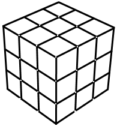

Once you click the "Start" button, the Rubik's Cube Tutor will find a complete algorithm leading to a solution for your cube and begin animating the solution for you by drawing moving
arrows onto the surface of the 3D cube view.
The easiest way to follow along is to simply copy the tutors moves with your cube in hand. 
Occasionally you will want pause to make sure your cube matches the tutor's cube or to read about the current step. The step descriptions will
automatically scroll into view as you progress. You can simply press the "Pause" button, or, if you prefer to keep your hands on your cube,
you can take a moment now to setup your microphone and use voice commands. By saying "PAUSE" into your computers microphone, the tutor will hault until you say "BEGIN".
The most common way to have the tutor move forward in the solution is by setting a number of seconds between each move. Alternatively, you can configure
the microphone so that the tutor won't move until you say "NEXT MOVE", or "NEXT STEP". A "move" is a single rotation or re-orientation of the cube - there are typically
150 moves or more to solve a scrambled cube. A "Step" is a series of moves which accomplish a defined task described in the tutor's step by step text.